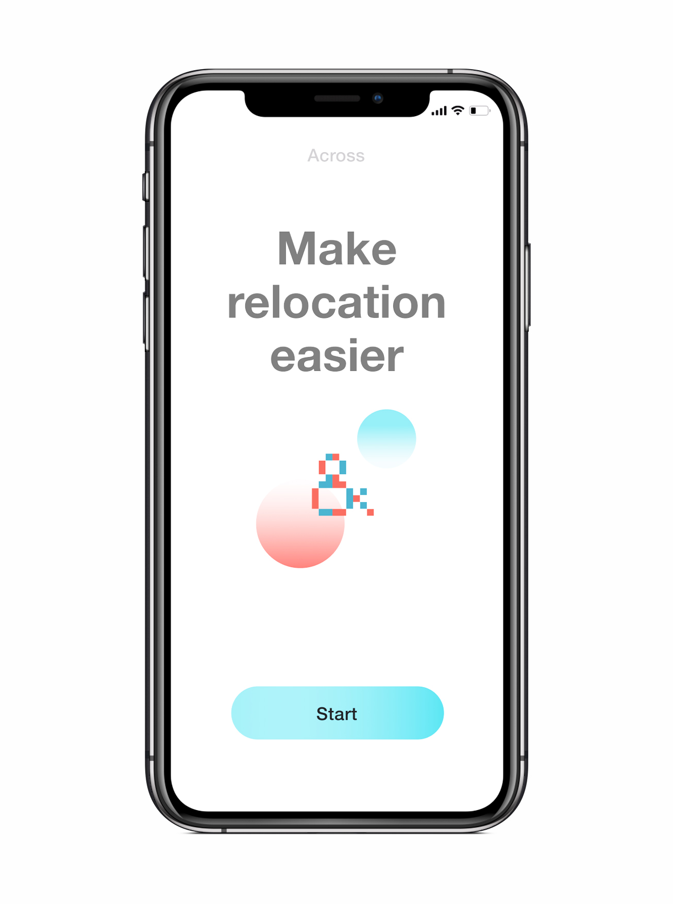
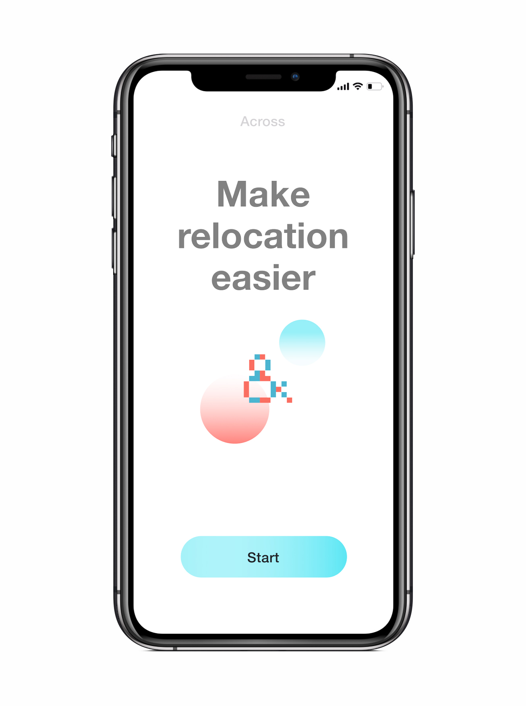

Across
Mobile service
 Target Users
People between the ages of 15 to 55, digital nomads, Gen Zs, or millennials residing in urban settings, who constantly relocate due to work or education.
Solution
A mobile platform that transfers across different cultural systems which serves as a switch in phone application when relocating.

Target Users
People between the ages of 15 to 55, digital nomads, Gen Zs, or millennials residing in urban settings, who constantly relocate due to work or education.
Solution
A mobile platform that transfers across different cultural systems which serves as a switch in phone application when relocating.
